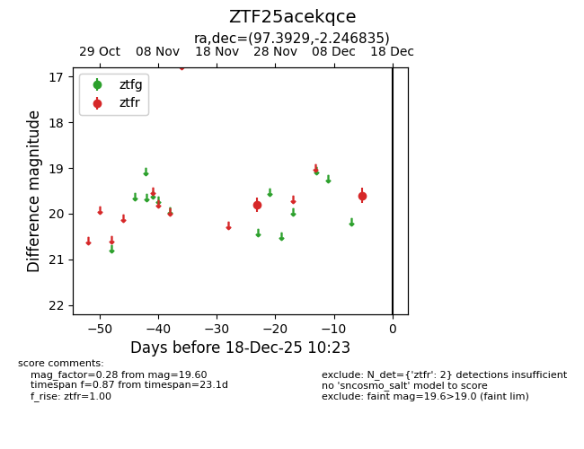
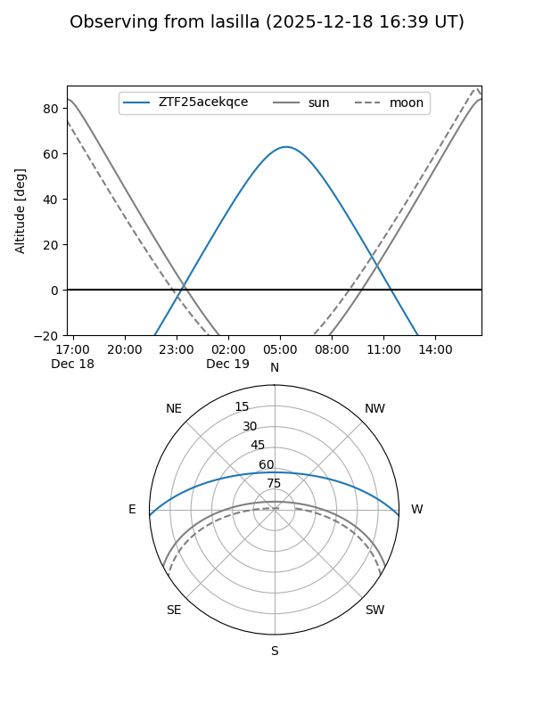
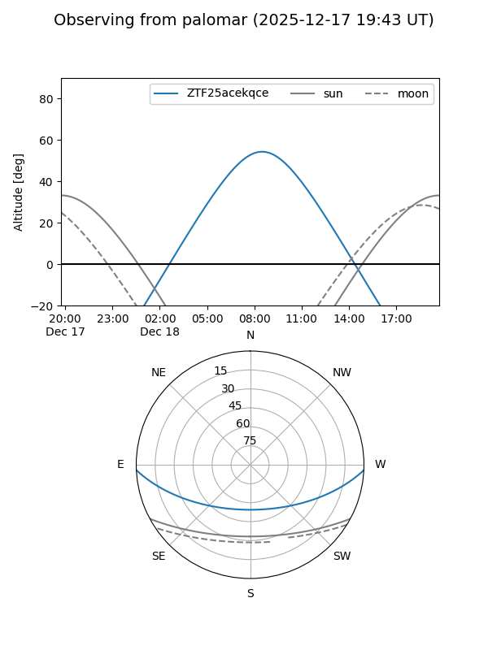

ZTF25acekqce
Target ZTF25acekqce at 2025-12-18 11:18
Aliases and brokers:
FINK: fink-portal.org/ZTF25acekqce
Lasair: lasair-ztf.lsst.ac.uk/objects/ZTF25acekqce
ALeRCE: alerce.online/object/ZTF25acekqce
alt names
ZTF25acekqce (ztf,fink_ztf)
Coordinates:
equatorial (ra, dec) = 97.3929,-2.24684
equatorial (HMS+DMS) = 06:29:34.28,-02:14:48.61
galactic (l, b) = (212.4415,-5.88874)
Photometry
last ztfr=19.60
2 ztfr detections
Lightcurve

Visibility


Additional plots